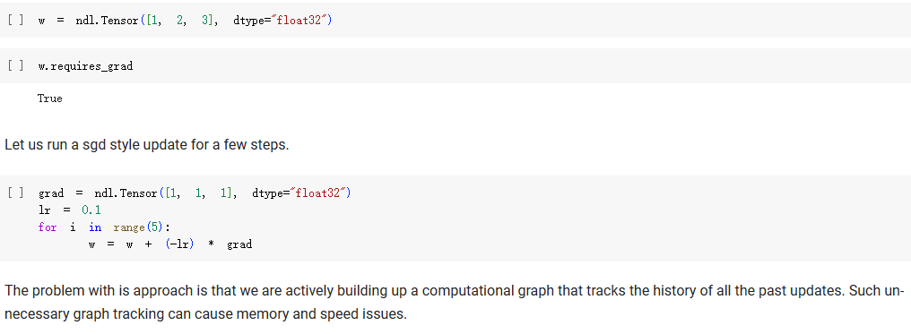
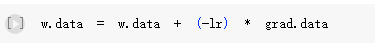
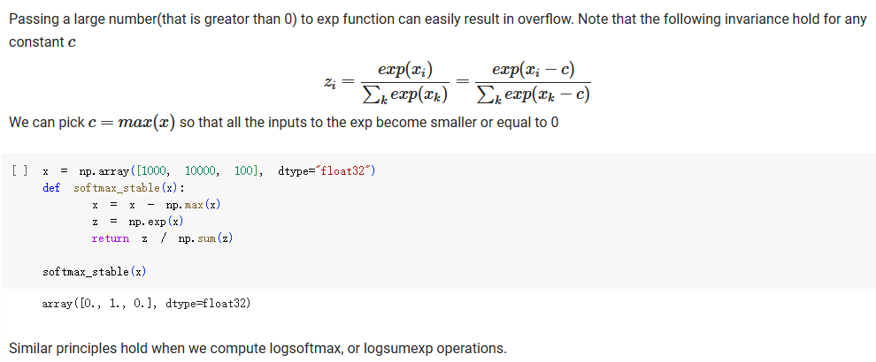
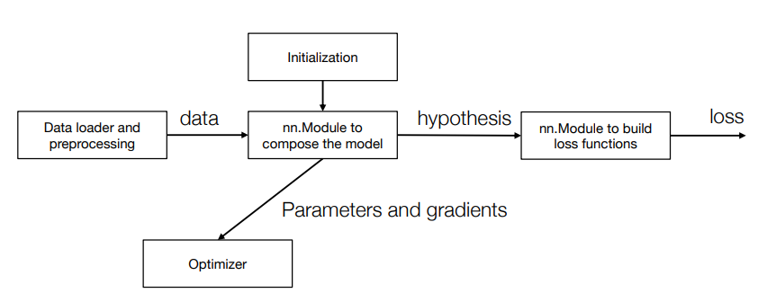

Neural Network Implementation¶
1. Mutating the data field of a needle Tensor¶
直接按照下图这样写代码，会有什么问题吗？ 
会有，因为grad也是Tensor，所以每次做w = w + (-lr) * grad时，也构造了计算图。
1. Weight update doesn't need to be tracked
不需要把weight update也加到计算图中，因为weight update不需要梯度。
正确的做法是：只改值，不创造计算图： 
2. Numerical Stability¶
浮点数的精度有限，浮点运算例如0.4 - 0.1得到的结果可能不是0.3，而是0.2999993。
以最常见的softmax操作为例，其中的exp如果输入的值很大，那么exp的结果就会是nan,所以需要一些技巧性的操作：

3. Design a Neural Network Library¶
回顾这张图： 
用Parameter类来包装Tensor，这样可以把Parameter类的grad属性设置为None，这样就不会把grad也加到计算图中了。
3.1 nn.Module¶
构建nn.Module的基础是Parameter类，用Parameter类继承自Tensor，是一种特殊的Tensor，
def _get_parameters(value):
if isinstance(value, Parameter):
return [value]
if isinstance(value, dict):
res = []
for k, v in value.items():
res += _get_parameters(v) # python 中的 list 相加即为合并
return res
if isinstance(value, Module)
return value.parameters()
class Module:
def parameters(self):
return _get_parameters(self.__dict__) # self.__dict__是一个字典，包含了所有的属性, key是属性名，value是属性值
def __call__(self, *args, **kwargs): # 重载了__call__方法，使得Module的实例可以像函数一样被调用
return self.forward(*args, **kwargs)
_get_parameters函数，间接“限制”了Module的属性必须是Parameter或者Module，否则就其调用parameters方法时就会有问题。
试试在这个基础上做一些具体的Module:
class ScaleAdd(Module):
def __init__(self, init_s = 1, init_b = 0):
self.s = Parameter([init_s], dtype = "float32")
self.b = Parameter([init_b], dtype = "float32")
def forward(self, x):
return x * self.s + self.b
class MultiPathScaleAdd(Module):
def __init__(self):
self.path0 = ScaleAdd()
self.path1 = ScaleAdd()
def forward(self, x):
return self.path0(x) + self.path1(x)
3.2 Loss Function¶
Loss Function可以看作是没有任何参数的Module，所以可以直接继承Module类，然后实现forward方法即可。
class L2Loss(Module):
def forward(self, x, y):
z = x + (-1) * y
return s * z
loss_func = L2Loss()
loss = loss_func(x, y)
loss.backward()
loss.backward()，就会把计算图中的所有节点的grad属性都计算出来，然后可以用grad属性来更新参数。
3.3 Optimizer¶
Optimizer的作用是更新参数，主要方法：
-
__init__：初始化，指明要更新哪些参数 -
step：更新参数 -
zero_grad：把所有参数的grad属性清零
class Optimizer:
def __init__(self, parameters):
self.parameters = parameters
def reset_grad(self):
for p in self.parameters:
p.grad = None
def step(self):
for p in self.parameters:
raise NotImplementedError
class SGD(Optimizer):
def __init__(self, parameters, lr = 0.01):
super().__init__(parameters) # 调用父类的__init__方法
self.lr = lr
def step(self):
for w in self.parameters:
w.data = w.data + (-self.lr) * w.grad.data
实现一个SGD with Momentum：
class SGDWithMomentum(Optimizer):
def __init__(self, parameters, lr = 0.01, momentum = 0.9):
super().__init__(parameters)
self.momentum = momentum
self.lr = lr
self.u = [ndl.zeros_like(p) for p in parameters]
def step(self):
for i, w in enumerate(self.parameters):
self.u[i] = self.u[i] * self.momentum + w.grad.data
w.data = w.data + (-self.lr) * self.u[i]
最后更新:
2023-08-24
创建日期: 2023-08-10
创建日期: 2023-08-10